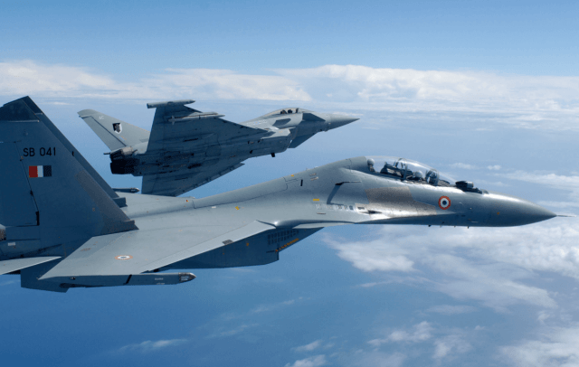

| Mikoyan MiG-29
The Mikoyan MiG-29 (Russian: Микоян МиГ-29; NATO reporting name: Fulcrum) is a twin-engine jet fighter aircraft designed in the Soviet Union. Developed by the Mikoyan design bureau as an air superiority fighter during the 1970s, the MiG-29, along with the larger Sukhoi Su-27, was developed to counter new U.S. fighters such as the McDonnell Douglas F-15 Eagle and the General Dynamics F-16 Fighting Falcon. The MiG-29 entered service with the Soviet Air Forces in 1982. While originally oriented towards combat against any enemy aircraft, many MiG-29s have been furnished as multirole fighters capable of performing a number of different operations, and are commonly outfitted to use a range of air-to-surface armaments and precision munitions. The MiG-29 has been manufactured in several major variants, including the multirole Mikoyan MiG-29M and the navalised Mikoyan MiG-29K; the most advanced member of the family to date is the Mikoyan MiG-35. Later models frequently feature improved engines, glass cockpits with HOTAS-compatible flight controls, modern radar and infrared search and track (IRST) sensors, and considerably increased fuel capacity; some aircraft have also been equipped for aerial refueling. |
 |